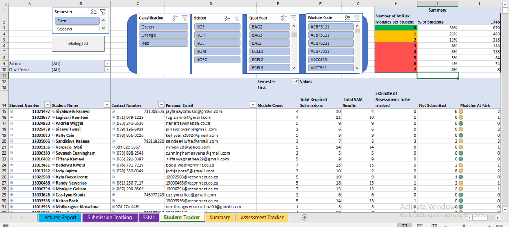
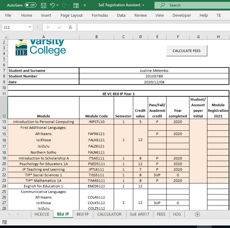
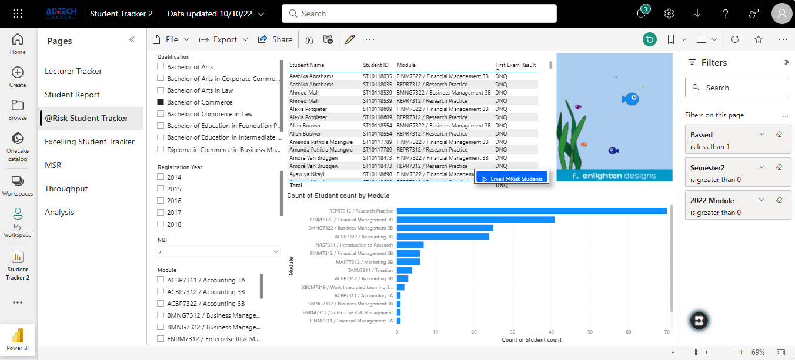
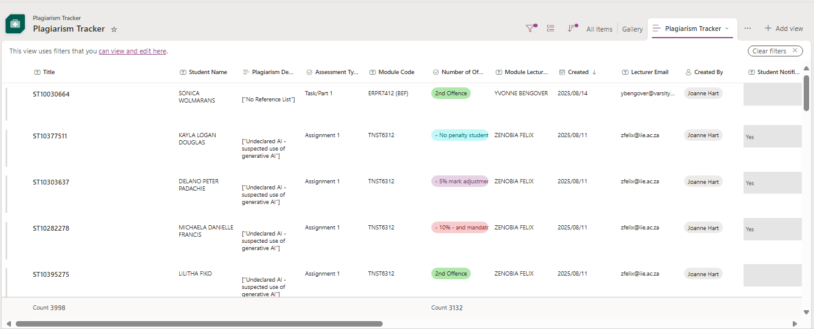
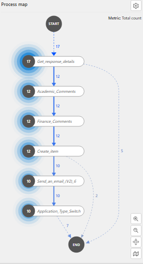

My teaching philosophy is rooted in fostering an inclusive, dynamic, and empowering learning environment.
I believe in leveraging technology to break down barriers and make learning accessible to all students.
By integrating the Mario Effect, I encourage grit and resilience, helping students embrace challenges
as opportunities for growth. Central to my approach is the belief that education is a collaborative journey,
where students are co-creators of knowledge, empowered to think holistically, advocate for themselves and others,
and contribute meaningfully to nation-building.
Co-creation
Holistic thinking
Advocacy
Nation-building
Grit
Empowerment
Performance Overview (2020-2024)
Success Rate & Student Numbers
Research Performance
Timeline of Teaching Excellence (2020-2025)
2020
Gamified Quizes
Gamified Quizes 1
Gamified Quizes 2
×

AIS
AIS 1
AIS 3

ACD
Executive Summary
Innovations & Achievements
Created Academic Intelligence System using Excel and VBA a comprehensive student support frameworks
Developed automated the ACD (academic counseling documentation)
Presented AIS at the IIE E-Symposium
Applied humor and trending events to theory application
Module Performance:
Module
Success Rate
Qualification
SET Avg (out of 5)
Business Management 3A
100%
Bachelor of Commerce
5
Business Management 3B
94%
Bachelor of Commerce
4.7
Emerging Researcher Top Module Success Rate Nationally
"She makes business interesting to learn by connecting with the class."
"The lecturer explains concepts well making it easy to understand and explains the module in relation to the real world of business."
"My business lecturer is the best, she applies the work to real life scenarios."
"Focus on theory alongside real-world applications."
Campus Innovations (2020)
Academic Counseling Documentation (ACD): Automation of the ACD process streamlined administrative work, allowing more time to focus on individual student needs and provide targeted support, which fostered a greater sense of belonging among students.
Academic Intelligence System (AIS): The AIS automated the identification of at-risk students and enabled proactive interventions, reducing manual tracking and freeing up time to build meaningful connections and support student success.
Lessons Learnt (2020)
2020 taught me that flexibility and empathy are essential in times of crisis. Automating admin tasks was not just about efficiency—it created space to connect with students on a personal level, support their unique challenges, and foster a sense of community. I also learned that clear communication and scaffolding are vital when introducing new technologies, and that peer support among staff and students is invaluable for navigating uncertainty together.
Aspect
Evidence
Reflection
Commentary
Clear articulation of learning outcomes
Online modules and video lectures defined outcomes for remote learning.
Measured via quizzes and assignments, aligned to new online standards.
Student-centered, flexible for remote context.
Aligned teaching activities
Interactive quizzes, video lectures, and online discussions.
Increased engagement and participation online.
Active learning despite remote challenges.
Assessment AS learning
Frequent online quizzes and feedback.
Helped students self-assess and improve.
Continuous, adaptive feedback loop.
Evidence of student engagement and motivation
High quiz participation and positive feedback.
Students adapted well to online learning.
Engagement maintained through innovation.
Data-driven curriculum improvement
Quiz and assignment data informed teaching adjustments.
Improved outcomes over the year.
Iterative, responsive teaching.
Integration with institutional goals
Online transition aligned with university COVID response.
Supported institutional resilience.
Model for future digital transformation.
My Teaching Practice
Intended Learning Outcomes: My goal was to deepen third-year students' understanding of core business concepts and to establish a baseline for subsequent theory and application later in the year. Online quizzes and polls were designed to help students demonstrate their understanding of the business context and to identify knowledge gaps early.
Activities & Assessment: I developed the Academic Intelligence System (AIS) to proactively identify and support at-risk students. Online quizzes (see evidence above) were used as a baseline for the Learning Unit and then an assesment of knowledge and application upon completion of the section. Providing immediate feedback on knowledge gaps and encouraging self-assessment. The COVID impact sharing activity fostered resilience and inclusivity.
Assessment as Learning: Frequent online quizzes and polls allowed students to self-assess, receive feedback, and improve their understanding in a supportive environment.
Reflection: The use of technology and data-driven support exceeded expectations for engagement, but some students struggled with digital tools or group sharing. In the future, I aimed to provide more scaffolding and options for private participation to ensure equitable access for all.
2021
Gamified Quizzes
×

Mohitso
Mohitso 1

Plagiarism
Sector Selection & Economic Flow
Continued Excellence & Growth
Enhanced Academic Intelligence System using PowerBi with predictive analytics to automate bespoke student support and encouragement, creating actionable academic intelligence.
Created the student plagiarism management system for the campus
Created automated paperless registration system during COVID
Integrated gamification elements inspired by the Mario Effect
Module Performance:
Module
Success Rate
Qualification
SET Result
Business Management 3A
100%
Bachelor of Commerce
5
Business Management 3B
93%
Bachelor of Commerce
4.7
Consistent High Performance Top Module Success Rate Nationally for Business Management
"Her teaching methods make complex concepts easy to understand."
"She creates an environment where we feel comfortable to ask questions and participate."
"The use of technology and real-world examples keeps us engaged throughout the lessons."
"More time for practical exercises would be beneficial."
Campus Innovations (2021)
Contributed to a campus-wide culture of ethical practice and data-driven engagement, supporting institutional goals for integrity and student success.
Developed and implemented a plagiarism management system for the campus.
Supported the transition to automated, paperless registration during COVID.
Lessons Learnt (2021)
Importance of clear communication and co-created guidelines for new systems.
Value of gamification and real-world context for engagement.
Need for ongoing feedback and refinement of campus-wide initiatives.
Aspect
Evidence
Reflection
Commentary
Clear articulation of learning outcomes
Business students struggled with the abstract concepts in application. Students were asked to select a sector and were provided with a series of scenarios and decision.
Role play activities facilitated by online anonimity encouraged participation.
Debates became a frequent and natural occurance deepening understanding and critical thinking, developing articulation of arguements skills. But I sometimes struggled to keep students on topic and they often couldn't accept perspectives from others.
Aligned teaching activities
Encouraged both written and in class debate with decisions being captured online for records.
Built grit through empathy and open-mindedness.
Respectful and inclusive participation, challenging ideas and having their own perspectives expanded.
Assessment AS learning
Sector selection and decision making captured on a form, choosing a position and defending it.
Encouraged self-reflection and improvement.
Constructive feedback loops.
Evidence of student engagement and motivation
High success rates despite challenges.
Motivation via transparent processes.
Reduced incidents, increased trust.
Data-driven curriculum improvement
Students need to relate to business concepts to understand their practical application and necessity to their knowledge.
Iterative updates for better outcomes, including trends and topics impacting different sectors.
Evidence-based adjustments.
Integration with institutional goals
Promoted critical thinking, the ability to clearly articulate an argument and the grit to have the idea challenged.
Aligned with Advocacy and Empowerment.
Institutional alignment strong.
My Teaching Practice
Intended Learning Outcomes: The main outcomes were to reinforce critical thinking, develop ethical reasoning, and deepen understanding of business theory. The gamified quizzes were specifically designed to establish a practical example of business scenarios and people.
Activities & Assessment: Gamified quizzes (see evidence above) were used as ice tasks to encourage repeated practice and mastery, and to identify areas where students needed further support. The second iteration, using real-life business scenarios, led to higher engagement and learning.
Assessment as Learning: Quizzes and forms provided instant feedback and allowed students to learn from mistakes, while the sector role-play encouraged self-reflection and improvement.
Reflection: Gamification and real-world context increased engagement, but clear communication was needed for new systems. In the future, I aimed to co-create guidelines and refine activities for better student buy-in.
2022
×
Conference 1
Conference 2
Conference 3
Conference 4
Research Form
Research Database
Research Path
Research Integration & Expansion
Created automated process using Microsoft Forms and Power Automate to assist students in generating research elements (topic, abstract, background), encouraging critical analysis.
Set up AI sentiment tracker for research-related emails via Teams chatbot for targeted guidance.
Presented at 4 international conferences, winning Best Presenter Award.
Module Performance:
Module
Success Rate
Qualification
SET Result
Business Management 3B
95%
Bachelor of Commerce
4.8
Research Practice
97%
Bachelor of Commerce
4.6
Top Module Success Rate Nationally Top Researcher Award
"She challenges us to think critically and apply concepts creatively."
"The collaborative learning approach helps us learn from each other."
"Fair assessment methods that truly reflect our understanding."
"More diverse reading materials would enhance our perspective."
Campus Innovations (2022)
Scaled impact beyond the classroom, supporting staff research development and contributing to the Institutional research mission.
Automated research title and abstract generation empowered students to take ownership of their research journey.
AI sentiment tracker provided timely, personalized support, enhancing student experience.
Recognition as Inspired Teaching winner highlighted the broader value of this approach.
Presented at international conferences, and abstract creator received 100% acceptance for conference applications by researchers, sharing innovations with a wider audience.
Lessons Learnt (2022)
Complex simulations require more scaffolding and background.
Peer feedback and collaboration deepen understanding.
Iterative refinement based on student feedback enhances effectiveness.
Balancing innovation with accessibility is crucial.
Sharing research and teaching practices benefits the wider community.
Aspect
Evidence
Reflection
Commentary
Clear articulation of learning outcomes
Research outcomes integrated into module objectives.
Students understood research's role in learning.
Bridged research and teaching.
Aligned teaching activities
Research projects and presentations.
Increased student ownership of learning.
Active, inquiry-based learning.
Assessment AS learning
Research presentations and peer feedback.
Students learned from each other.
Collaborative assessment.
Evidence of student engagement and motivation
High participation in research activities.
Students motivated by real-world impact.
Engagement through relevance.
Data-driven curriculum improvement
Research data used to refine modules.
Continuous improvement based on evidence.
Research-informed teaching.
Integration with institutional goals
Research aligned with institutional priorities.
Supported university's research mission.
Strengthened institutional reputation.
My Teaching Practice
Intended Learning Outcomes: To develop students' research skills, critical thinking, and ability to generate meaningful research topics and abstracts.
Activities & Assessment: The Automated Research Title Generator project used Socratic questioning and digital tools to guide students through research design. The abstract creator supported both students and staff, achieving a 100% conference acceptance rate.
Assessment as Learning: Iterative self-assessment and peer discussions deepened understanding and ownership of research principles.
Reflection: The system was highly effective, but complex simulations (e.g., prisoner's dilemma) required more scaffolding. In the future, I will integrate more background and student feedback to refine activities.
2023
×
Retention Project
Conference 5
Conference 6
Best Presenter
Trading Challenge 2023
Trading Challenge 2024
Trading Challenge 2025
Scaling Impact & Leadership
Implemented Socratic-inspired, technology-driven research planning using Microsoft Forms, Power Automate, and SharePoint
Used AI sentiment tracking via Teams chatbot to provide targeted student support
Designed and facilitated game theory and strategic decision-making activities, including the prisoner's dilemma exercise
Took over Trading/Investment Challenge to inspire practical application outside curriculum.
Module Performance:
Module
Success Rate
Qualification
SET Result
Accounting Software
76%
Higher Certificate in Business Principles and Practice
4.3
Business Management 3A
94%
Bachelor of Commerce
5
Business Management 3B
100%
Bachelor of Commerce
4.7
Introduction to Quantitative Thinking and Techniques
79%
Higher Certificate in Business Principles and Practice
4.6
Retail Management
92%
Bachelor of Commerce
4.6
Research Points: 2 Top Module Success Rate Nationally National Innovative Activity Award Winner
"She guides us to become independent learners and critical thinkers."
"Her global perspective on business helps us understand diverse markets."
"She advocates for student success and creates supportive learning environments."
"sometimes Mohini is a bit fast and I do feel like I’m a bit behind and it’s a bit hard to ask her to slow down because it seems like everyone else in the class understands and I’ll be holding everyone back"
Campus Innovations (2023)
Leadership in the Trading Challenge and AI integration inspired campus-wide adoption of innovative teaching and learning practices.
Used AI sentiment tracking and SAGE activities to support student success.
Shared best practices for technology-driven research planning.
Lessons Learnt (2023)
Scaling impact requires balancing technology with personal connection.
Mentorship and accessible resources are key for student engagement.
Continuous feedback and iteration drive improvement.
Aspect
Evidence
Reflection
Commentary
Clear articulation of learning outcomes
Mentoring and support systems clarified expectations.
Students understood their learning journey.
Greater transparency and clarity.
Aligned teaching activities
Workshops, advocacy, and technology integration.
Broader participation and skill development.
Inclusive, skills-based approach.
Assessment AS learning
Peer and self-assessment in workshops.
Students reflected on their own progress.
Empowered student voice.
Evidence of student engagement and motivation
Active participation in advocacy and support programs.
Students felt heard and valued.
Motivation through ownership.
Data-driven curriculum improvement
Feedback from mentoring and workshops used to improve content.
Iterative improvements based on feedback.
Responsive to student needs.
Integration with institutional goals
Programs aligned with institutional support and advocacy goals.
Strengthened institutional culture.
Model for other faculties.
My Teaching Practice
Intended Learning Outcomes: To foster independent learning, critical thinking, and the ability to apply business theory to real-world scenarios.
Activities & Assessment: AI-driven quizzes and the Trading Challenge encouraged students to connect theory with practice. Co-created notes and staged SAGE activities provided practical context.
Assessment as Learning: Quizzes and challenges provided feedback and opportunities for self-assessment, supporting mastery and engagement.
Reflection: Technology and mentorship scaled impact, but maintaining personal connections was challenging. Future plans include tiered mentorship and more accessible resources.
Integrated Ecotana, an AI-powered personal tutor system, to deliver personalized support and adaptive learning after each unit
Facilitated critical debate activities where students compared AI-generated and textbook content, fostering active inquiry and peer-led discussion
Used analytics and unlimited formative quizzes to identify and support at-risk students earlier in the semester
Module Performance:
Module
Success Rate
Qualification
SET Result
Accounting Software
77%
Higher Certificate in Business Principles and Practice
4.4
Business Management 3A
97%
Bachelor of Commerce
5
Introduction to Quantitative Thinking and Techniques
77%
Higher Certificate in Business Principles and Practice
4.6
Economics 1B
80%
Bachelor of Commerce
4.4
Top Module Success Rate Nationally Intergration of Gen-AI into teaching and Learning Top Researcher award
"The integration of AI tools in learning has transformed our study experience."
"She connects us with global perspectives and industry insights."
"Her research-informed teaching brings cutting-edge knowledge to the classroom."
"Managing such large cohorts while maintaining quality is challenging but she does her best."
Campus Innovations (2024)
Work with Ecotana contributed to the campus’s leadership in Gen-AI integration, supporting institutional goals for inclusive, adaptive learning.
Facilitated critical debate activities and peer-led discussion on AI in education.
Used analytics and formative quizzes to identify and support at-risk students earlier in the semester.
Lessons Learnt (2024)
AI-driven support improves engagement but must be balanced with community-building.
Hybrid models and analytics enable early intervention and support.
Critical engagement and debate foster deeper learning.
Aspect
Evidence
Reflection
Commentary
Clear articulation of learning outcomes
Ecotana defined outcomes for economics knowledge gaps.
Measurable via MCQ testing, aligned to NQF 5/7.
Precise and student-centered.
Aligned teaching activities
AI tutoring with prompts for inclusive learning.
Incorporated humor and trends for accessibility.
Tech facilitation of active construction.
Assessment AS learning
MCQ feedback and notes generation.
Judgment-free environment builds resilience.
Continuous, adaptive feedback.
Evidence of student engagement and motivation
Success rates and sentiment data.
Motivation through safe, personalized tutoring.
High engagement in challenging modules.
Data-driven curriculum improvement
Reports from Ecotana informed teaching adjustments.
300% research growth shows impact.
Strong iterative data use.
Integration with institutional goals
Gen-AI for inclusivity and empowerment.
Aligned with Sirius project and CHANGE.
Scalable institutional benefits.
My Teaching Practice
Intended Learning Outcomes: The automated personal tutor system (Ecotana) aimed to help students master economics concepts, identify and close knowledge gaps, and build confidence through formative assessment.
Activities & Assessment: Ecotana delivered personalized quizzes and notes, adapting to each student’s needs. Critical debate activities encouraged students to compare AI and textbook content, fostering inquiry and discussion.
Assessment as Learning: Unlimited formative quizzes and analytics supported mastery, while debates and peer-led discussions deepened understanding.
Reflection: AI-driven support improved engagement and outcomes, but required balancing with community-building and critical engagement. Future plans include refining hybrid models and using analytics for early intervention.
2025

RAMS (Research Admin Management System)
RAMS (Research Admin Management System)
Online Economics Simulations
Online Economics Simulations (ARC)
Online Economics Simulations (ARC) 1
Innovation & National Impact
Expanded use of online economics simulations for student engagement and assessment
Created an automated research administrative support management system to support national researchers with funding applications.
Presented the Research Admin Management System at the 2025 Innovation Competition.
Module Performance:
Module
Success Rate
Qualification
SET Result
Economics 1B
--
Bachelor of Commerce
--
Business Management 3A
--
Bachelor of Commerce
--
National Innovation Competition Presenter
Constructive Alignment Table (2025)
Aspect
Evidence
Reflection
Commentary
Clear articulation of learning outcomes
Simulations outcomes were defined and communicated to students.
Measured via engagement and performance in simulations.
Transparent, student-focused goals.
Aligned teaching activities
Online simulations and workshops.
Increased digital literacy and confidence.
Active, hands-on learning.
Assessment AS learning
Formative feedback on simulation performance.
Students improved through feedback cycles.
Continuous improvement focus.
Evidence of student engagement and motivation
High participation in simulations.
Positive feedback and increased activity.
Motivation through real-world impact.
Data-driven curriculum improvement
Usage data and feedback informed updates.
Iterative improvements based on analytics.
Responsive, evidence-based changes.
Integration with institutional goals
Aligned with digital transformation strategies.
Supported institutional objectives.
Model for future innovation.
My Teaching Practice
Intended Learning Outcomes: To empower students to apply economics concepts in practical, simulated environments.
Activities & Assessment: Integrated new economics simulations into the curriculum. Provided training and iterative feedback to ensure adoption.
Assessment as Learning: Used formative feedback and analytics to support continuous improvement for students.
Reflection: The year highlighted the value of co-creation, user-centered design, and the need for ongoing support in digital transformation. The success of the simulations was due to collaboration and a focus on real-world impact.
"The new funding application system made research support so much easier to access."
"Simulations helped me understand economics in a practical way."
Campus Innovations (2025)
Created an automated research administrative support management system (RAMS) to support national researchers with funding applications.
Presented the Research Admin Management System at the 2025 Innovation Competition.
Expanded use of online economics simulations for student engagement and assessment.
Enhanced Academic Intelligence System using PowerBi with predictive analytics to automate bespoke student support and encouragement, creating actionable academic intelligence.
Lessons Learnt (2025)
This year, I embraced a new chapter by running on-campus business simulations—an experience that not only energized my teaching but also inspired the digital economic simulations I’ve built for ARC. Starting to lecture for the online campus has challenged me to rethink how I deliver content and support students, especially when it comes to bridging theory and practice. My goal is to develop a suite of resources that make abstract concepts tangible and engaging for every learner.
Every student in my classes now receives a toolkit of AI-generated podcasts, videos, mindmaps, ARC simulations, and a curated book of AI prompts. These prompts empower them to use Ecotana, our AI tutor, across all subjects—accommodating diverse learning preferences and encouraging critical thinking by providing access to multiple sources and approaches. I’ve learned that true understanding comes from seeing a concept from many angles, and that technology, when used mindfully, can make learning more personal, inclusive, and transformative.
As I continue to innovate, my focus remains on creating learning experiences that are practical, flexible, and deeply connected to the real world—ensuring every student has the tools and confidence to succeed in a rapidly changing landscape.
Conclusion: A Journey of Growth & Impact
Reflecting on Achievements and the Power of Mindful Education
Over the years, this teaching journey has been defined by a commitment to innovation, resilience, and the pursuit of excellence. Each challenge has been an opportunity to learn, adapt, and grow—both as an educator and as a mentor to future leaders. Achievements in academic performance, research, and student engagement are not just milestones, but stepping stones in a story of continuous development.
Mindful education has been at the heart of this journey: fostering critical thinking, encouraging students to question, reflect, and connect theory to the real world. Technology has been leveraged not just for efficiency, but as a tool to advance equity ambitions—ensuring every student, regardless of background, has access to meaningful learning opportunities.
Individual and approachable support has empowered students to overcome obstacles, while a culture of grit and resilience has reframed failure as a vital part of growth. The goal has always been to nurture responsible, socially conscious citizens—equipped with the skills, knowledge, and mindset to thrive in a complex world.
As this portfolio demonstrates, the true measure of success lies not only in results, but in the ability to inspire, support, and transform lives through education.


.png)

.png)
 1.png)